3. User Administrator Authority
3.1. Overview
Responsible persons and users who are granted the user administrator authority can use the following functions.
- Add / Cancel node reservation
- Refer to ABCI point usage history
- Refer to ABCI point addition history
- Manage Group
- Manage ABCI Cloud Storage
3.2. Node Reservation / Cancellation
3.2.1. Add Node Reservation
Click the "Add reservation" button.
![[[Screenshot]]](../img/3_01.png)
Enter each items about node reservation. The entry of "*" is mandatory. When clicking the "Add reservation" button, the dialog box will be displayed. Click the "OK" button in the dialog box.
When node reservation is added successfully, the screen for reservation addition completion will be displayed.
3.2.2. Cancel Node Reservation
When checking the checkbox from the list of node reservations and clicking the "Cancel reservation" button, the dialog box will be displayed.
![[[Screenshot]]](../img/3_03.png)
Click the "OK" button in the dialog box.
3.3. Usage History for ABCI Point
Click the "Display" button in the "Administrator authority" field.
![[[Screenshot]]](../img/3_04.png)
Click the "More Detail" button on the screen.
The monthly ABCI point usage per user is displayed.
3.4. Additional History for ABCI Point
Click the "Additional history for ABCI point" from the side menu.
![[[Screenshot]]](../img/3_06.png)
The list of ABCI groups is displayed. Select the ABCI group from the list and click the "Display history" button.
The additional history of ABCI group is displayed.
3.5. Group Management
Click the "Group Management" from the side menu.
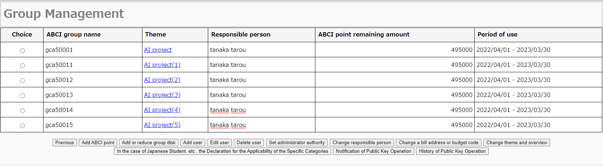
3.5.1. ABCI Point Addition Request
Select the ABCI group from the list of group management, and click "Add ABCI point" button.
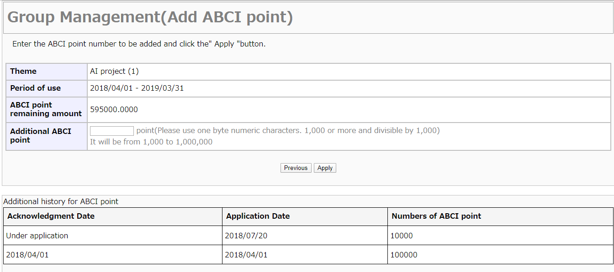
Enter additional ABCI point unit and click the "Apply" button. When the dialog box is displayed, click the "OK" button.
![[[Screenshot]]](../img/3_10.png)
When the request of ABCI point addition is completed successfully, the screen of request completion for ABCI point addition will be displayed. The applicant will be notified by e-mail for the application content.
When the application is approved, the applicant will be notified by e-mail. The responsible person and the administrators other than the applicant are not notified by e-mail.
3.5.1.1. Reapply for the sent back application of ABCI point addition
If there is any deficiency in the application content, it may be sent back.
The URL for resumption and the reason for sent back will be notified to the e-mail address.
To reapply for the application, launch your favorite browser and copy/paste the URL.
You can correct it from the input content correction screen and apply again.
3.5.2. Disk Addition or Reduction Request
Select the ABCI group from the list of group management, and click the "Add or reduce group disk" button.
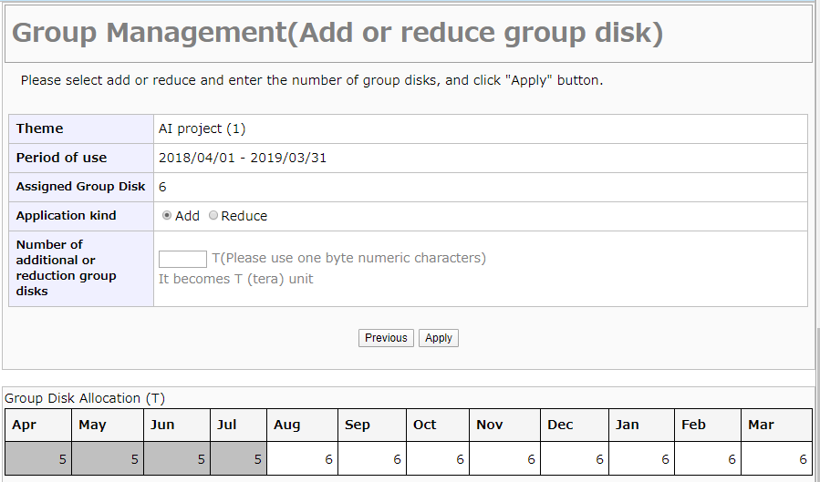
Enter additional disk volume and click the "Apply" button. Select "Add" or "Reduce", enter the disk volume and click the "Apply" button. When the dialog box is displayed, click the "OK" button.
![[[Screenshot]]](../img/3_12.png)
When disk addition or reduction is requested successfully, the disk will be available at once.
Note
Disk addition request: ABCI points will be consumed from the time of application until the end of the fiscal year, depending on the amount of Disk added.
Disk reduction request: ABCI points will be returned in the amount from the month following application until the end of the fiscal year, depending on the amount of Disk reducted.
Warning
In a reduction application, you cannot submit an application that falls below the currently used disk capacity.
3.5.3. Add User to ABCI Group
Select the ABCI group from the list of group management, and click the "Add user" button.
Refer to the identity confirmation request, and click "I agree with all and move on to the next" if you agree.
![[[Screenshot]]](../img/3_13_1.png)
Click the "Add" button on the screen.
![[[Screenshot]]](../img/3_14.png)
Enter each items about users who participate in the group, and click the "OK" button.
The entry of "*" is mandatory.
![[[Screenshot]]](../img/3_14_1.png)
The list of users you entered will be shown.
To add a user who has already acquired an ABCI account, click the "Add an existing account easily" button, screen for the ABCI account name input will be displayed.
![[[Screenshot]]](../img/3_14_2.png)
Enter the existing ABCI account name and email address and click the "OK" button.
Check "Presence or absence of administrator authority" if you want administrator authority delegated.
![[[Screenshot]]](../img/3_14_3.png)
The list of users entered for easily addition is displayed.
Full name, Affiliation, etc. will be displayed as "****".
To add multiple users at once, click the "Batch add from CSV file" button, screen for CSV file selection will be displayed.
Download the CSV file from "Download file for batch addtion", and choose the file in which each item is entered by "Choose file".
After selecting the files, click the "Batch add".
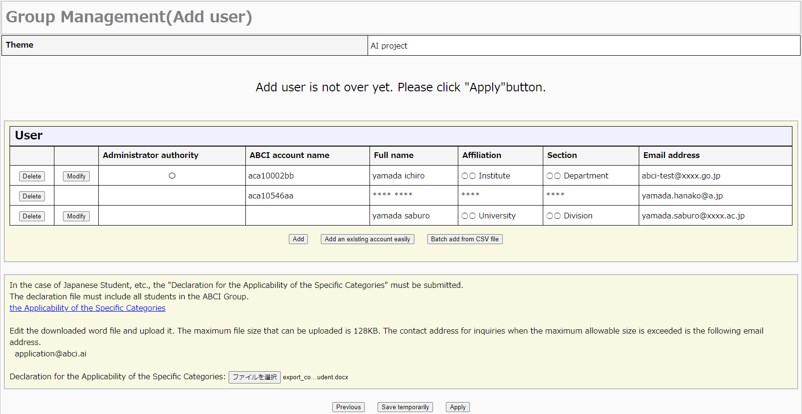
The list of users you entered will be shown.
When clicking the "Modify" button, you can modify the target user information.
When clicking the "Delete" button, you can delete the target user.
To save your application temporarily, click the "Save temporarily" button. You can resume from the saved point by clicking the "Add user" button.
When you finish to enter all additional users, click the "Apply" button.
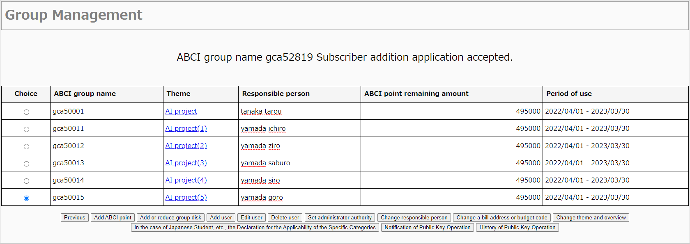
The screen for additional users completion is displayed. The applicant will be notified by e-mail for the application content.
When the application is approved, the added users will be notified by e-mail. Applicant, responsible person and administrator are not notified.
3.5.3.1. Reapply for the sent back application of ABCI user add
If there is any deficiency in the application content, it may be sent back.
The URL for resumption and the reason for sent back will be notified to the e-mail address.
To reapply for the application, launch your favorite browser and copy/paste the URL.
![[[Screenshot]]](../img/3_16_1.png)
You can correct it from the input content correction screen and apply again.
3.5.4. Delete User from ABCI Group
Select the ABCI group from the list of group management, and click "Delete user" button.
![[[Screenshot]]](../img/3_17.png)
The list of users who belong to the ABCI group is displayed. To delete user from ABCI group, check the checkbox from the list of users and click the "Delete" button.
When user is deleted from ABCI group successfully, the screen for deleting user completion will be displayed.
3.5.5. Set Administorator Authority
Select the ABCI group from the list of group management, and click "Set administrator authority" button.
![[[Screenshot]]](../img/3_19.png)
The list of users who belong to the ABCI group is displayed.
3.5.5.1. Grant Administrator Authority
To grant the administrator authority, check the checkbox from the list of users who does not have administrator authority and click the "Set delegate authority" button. Click the "OK" button in the dialog box.
![[[Screenshot]]](../img/3_20.png)
When administrator aurhotiry is granted successfully, the screen for setting administrator authority completion will be displayed.
3.5.5.2. Delete Administrator Authority
To delete the administrator authority, check the checkbox from the list of users who have administrator authority and click the "Delete delegate authority" button. Click the "OK" button in the dialog box.
![[[Screenshot]]](../img/3_21.png)
When administrator aurhotiry is deleted successfully, the screen for setting administrator authority completion will be displayed.
3.5.6. Change Respoinsible Person
Select the ABCI group from the list of group management, and click "Change responsible person" button.
![[[Screenshot]]](../img/3_22.png)
The information about responsible person is displayed. The entry of "*" is mandatory. Enter the information about new responsible person, and click the "Apply" button. Click the "OK" button in the dialog box.
![[[Screenshot]]](../img/3_23.png)
When changing the responsible persosn is applied successfully, the screen for changing responsible person completion will be displayed. When your applicaiton is approved, responsible person will be notified by e-mail.
3.5.7 Edit User
Select the ABCI group from the list of group management, and click "Edit user" button.
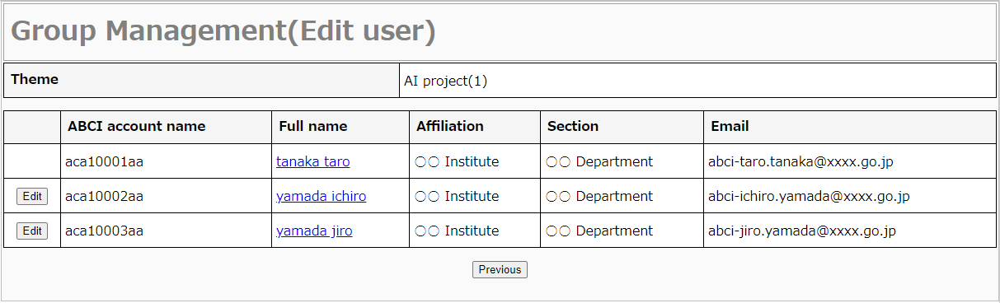
Click the "Edit" button from the list of users.
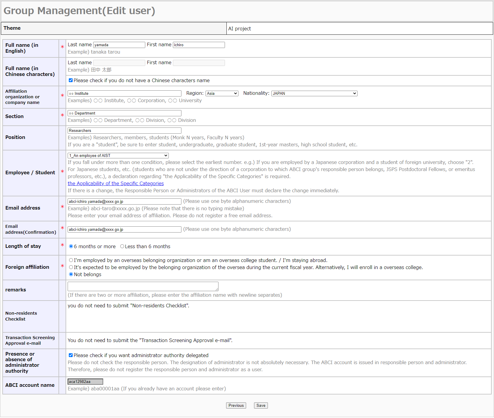
The input screen about user is displayed. The entry of "*" is mandatory. When checklist is required, upload it.
The save completion screen is displayed and the edited content is saved.
However, if you edit the following items, the edited contents will not be saved immediately and will be applied.
- Name
- Affiliation organization or company name
- Email address
- Length of stay
- Foreign affiliation
- Foreign Checklist
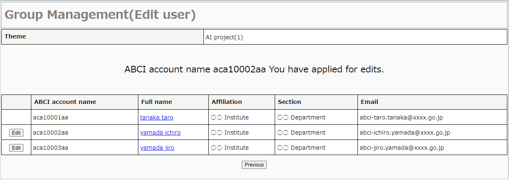
The application completion screen for editing user information is displayed. The applicant will be notified by e-mail for the application content.
When the application is approved, the approved user will be notified by e-mail. Applicant, responsible person and administrator are not notified.
3.5.7.1. Reapply for the sent back application of ABCI user edit
If there is any deficiency in the application content, it may be sent back.
The URL for resumption and the reason for sent back will be notified to the e-mail address.
To reapply for the application, launch your favorite browser and copy/paste the URL.
You can correct it from the input content correction screen and apply again.
3.6. Manage ABCI Cloud Storage
Click the "Cloud Storage Management" on the side menu.
The list of available ABCI groups is displayed.
3.6.1 Start ABCI Cloud Storage
Click "Start using" button on the screen.
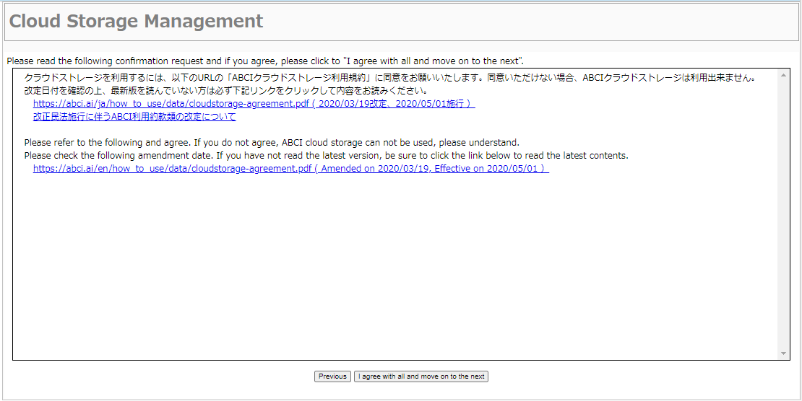
Refer to the terms of use and click the "I agree with all and move on to the next" button if you agree.
The screen returns to ABCI group list. When Cloud Storage has been available, "In use" is displayed in the usage status column.
3.6.2 Manage ABCI Cloud Storage account for administorator
Click "Manage CS Account for Administorator" button on the screen.
3.6.2.1 Add Cloud Storage account
Click "Add CS Account for Administrator" button on the screen.
Refer to the terms of use and click the "I agree with all and move on to the next" button if you agree.
A screen appears that the new account for Administorator has been created. Click "To CS Account list" button on the screen.
![[[Screenshot]]](../img/3_33.png)
After that, you can create a cloud storage account using the same procedure. All users belonging to the ABCI group and adding Cloud Storage account is displayed in the list.
3.6.2.2 Delete Access Key
Click "Manage access key" button.
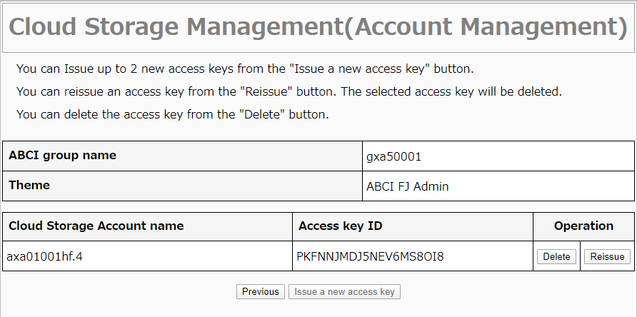
Click "Delete" button which you want to delete, and click "OK" on the dialog box.
3.6.2.3 Delete Access Keys at Once
Check the check boxes that you want to delete and Click "Delete access key", dialog box to confirm deletion of the access keys appears. Click "OK" on the dialogbox, the access keys are deleted.
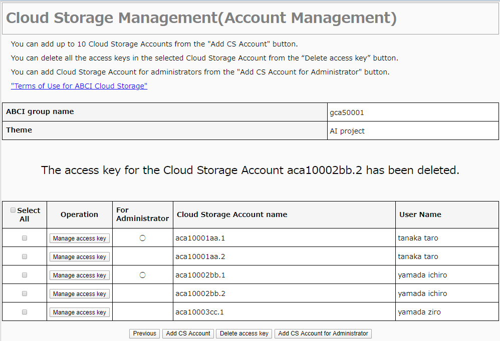
A screen appears that the access keys has been deleted.